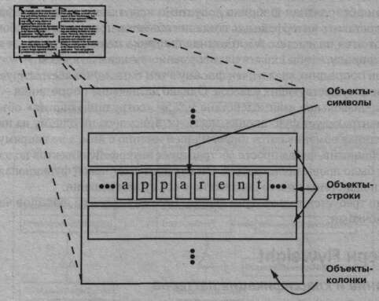
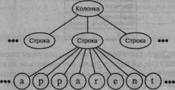
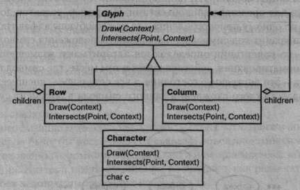
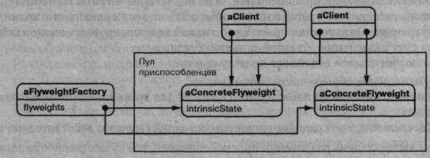
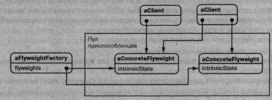

Приемы объектно-ориентированного проектирования
Паттерны проектирования
Глава 4. Структурные паттерны : Паттерн Flyweight
Паттерн Flyweight
Название и классификация паттерна
Приспособленец - паттерн, структурирующий объекты.
Назначение
Использует разделение для эффективной поддержки множества мелких объектов.
Мотивация
В некоторых приложениях использование объектов могло бы быть очень по- лезным, но прямолинейная реализация оказывается недопустимо расточительной. Например, в большинстве редакторов документов имеются средства форма- тирования и редактирования текстов, в той или иной степени модульные. Объект- но-ориентированные редакторы обычно применяют объекты для представления таких встроенных элементов, как таблицы и рисунки. Но они не используют объекты для представления каждого символа, несмотря на то что это увеличило бы гибкость на самых нижних уровнях приложения. Ведь тогда к рисованию и фор- матированию символов и встроенных элементов можно былб бы применить еди- нообразный подход. И для поддержки новых наборов символов не пришлось бы как-либо затрагивать остальные функции редактора. Да и общая структура прило- жения отражала бы физическую структуру документа. На следующей диаграмме показано, как редактор документов мог бы воспользоваться объектами для пред- ставления символов.
У такого дизайна есть один недостаток - стоимость. Даже в документе скром- ных размеров было бы несколько сотен тысяч объектов-символов, а это привело бы к расходованию огромного объема памяти и неприемлемым затратам во время выполнения. Паттерн приспособленец показывает, как разделять очень мелкие объекты без недопустимо высоких издержек.
Приспособленец - это разделяемый объект, который можно использовать одновременно в нескольких контекстах. В каждом контексте он выглядит как не- зависимый объект, то есть неотличим от экземпляра, который не разделяется. Приспособленцы не могут делать предположений о контексте, в котором работают. Ключевая идея здесь - различие между внутренним и внешним состояниями. Внутреннее состояние хранится в самом приспособленце и состоит из информа- ции, не зависящей от его контекста. Именно поэтому он может разделяться. Внеш- нее состояние зависит от контекста и изменяется вместе с ним, поэтому не подле- жит разделению. Объекты-клиенты отвечают за передачу внешнего состояния приспособленцу, когда в этом возникает необходимость.
Приспособленцы моделируют концепции или сущности, число которых слишком велико для представления объектами. Например, редактор документов мог бы создать по одному приспособленцу для каждой буквы алфавита. Каждый приспособленец хранит код символа, но координаты положения символа в доку- менте и стиль его начертания определяются алгоритмами размещения текста и командами форматирования, действующими в том месте, где символ появляет- ся. Код символа - это внутреннее состояние, а все остальное - внешнее.
Логически для каждого вхождения данного символа в документ существует объект.
Физически, однако, есть лишь по одному объекту-приспособленцу для каждо- го символа, который появляется в различных контекстах в структуре документа. Каж- дое вхождение данного объекта-символа ссылается на один и тот же экземпляр в раз- деляемом пуле объектов-приспособленцев.

Ниже изображена структура класса для этих объектов. Glyph - это абстракт- ный класс для представления графических объектов (некоторые из них могут быть приспособленцами). Операции, которые могут зависеть от внешнего состоя- ния, передают его в качестве параметра. Например, операциям Draw (рисование) и Intersects (пересечение) должно быть известно, в каком контексте встреча- ется глиф, иначе они не смогут выполнить то, что от них требуется.
Приспособленец, представляющий букву «а», содержит только соответствую- щий ей код; ни положение, ни шрифт буквы ему хранить не надо. Клиенты пере- дают приспособленцу всю зависящую от контекста информацию, которая нужна, чтобы он мог изобразить себя. Например, глифу Row известно, где его потомки должны себя показать, чтобы это выглядело как горизонтальная строка. Поэтому вместе с запросом на рисование он может передавать каждому потомку координаты. Поскольку число различных объектов-символов гораздо меньше, чем число символов в документе, то и общее количество объектов существенно меньше, чем было бы при простой реализации. Документ, в котором все символы изображают- ся одним шрифтом и цветом, создаст порядка 100 объектов-символов (это при- мерно равно числу кодов в таблице ASCII) независимо от своего размера. А по- скольку в большинстве документов применяется не более десятка различных комбинаций шрифта и цвета, то на практике эта величина возрастет несуществен- но. Поэтому абстракция объекта становится применимой и к отдельным символам.
Применимость
Эффективность паттерна приспособленец во многом зависит от того, как и где он используется. Применяйте этот паттерн, когда выполнены все нижепере- численные условия:
- а в приложении используется большое число объектов;
- а из-за этого накладные расходы на хранение высоки;
- а большую часть состояния объектов можно вынести вовне;
- а многие группы объектов можно заменить относительно небольшим количе- ством разделяемых объектов, поскольку внешнее состояние вынесено;
- а приложение не зависит от идентичности объекта. Поскольку объекты-при- способленцы могут разделяться, то проверка на идентичность возвратит «истину» для концептуально различных объектов.
Структура
 На следующей диаграмме показано, как приспособленцы разделяются.

На следующей диаграмме показано, как приспособленцы разделяются.

Участники
a Flyweight (Glyph) - приспособленец:
- - объявляет интерфейс, с помощью которого приспособленцы могут полу- чать внешнее состояние или как-то воздействовать на него;
a ConcreteFlyweight (Character) - конкретный приспособленец:
- - реализует интерфейс класса Flyweight и добавляет при необходимости внутреннее состояние. Объект класса ConcreteFlyweight должен быть разделяемым. Любое сохраняемое им состояние должно быть внутрен- ним, то есть не зависящим от контекста;
a UnsharedConcreteFlyweight (Row, Column) - неразделяемый конкретный приспособленец:
- - не все подклассы Flyweight обязательно должны быть разделяемыми. Интерфейс Flyweight допускает разделение, но не навязывает его. Часто у объектов UnsharedConcreteFlyweight на некотором уровне структуры приспособленца есть потомки в виде объектов класса Concret eFlyweight, как, например, у объектов классов Row и Column;
a FlyweightFactory - фабрика приспособленцев:
- - создает объекты-приспособленцы и управляет ими;
- - обеспечивает должное разделение приспособленцев. Когда клиент запра- шивает приспособленца, объект FlyweightFactory предоставляет су- ществующий экземпляр или создает новый, если готового еще нет;
a Client - клиент:
- - хранит ссылки на одного или нескольких приспособленцев;
- - вычисляет или хранит внешнее состояние приспособленцев.
Отношения
- а состояние, необходимое приспособленцу для нормальной работы, можно охарактеризовать как внутреннее или внешнее. Первое хранится в самом объекте ConcreteFlyweight. Внешнее состояние хранится или вычисля- ется клиентами. Клиент передает его приспособленцу при вызове операций;
- а клиенты не должны создавать экземпляры класса ConcreteFlyweight напрямую, а могут получать их только от объекта FlyweightFactory. Это позволит гарантировать корректное разделение.
Результаты
При использовании приспособленцев не исключены затраты на передачу, по- иск или вычисление внутреннего состояния, особенно если раньше оно хранилось как внутреннее. Однако такие расходы с лихвой компенсируются экономией па- мяти за счет разделения объектов-приспособленцев.
Экономия памяти возникает по ряду причин:
- а уменьшение общего числа экземпляров;
- а сокращение объема памяти, необходимого для хранения внутреннего состо- яния;
- а вычисление, а не хранение внешнего состояния (если это действительно так).
Чем выше степень разделения приспособленцев, тем существеннее экономия. С увеличением объема разделяемого состояния экономия также возрастает. Са- мого большого эффекта удается добиться, когда суммарный объем внутренней и внешней информации о состоянии велик, а внешнее состояние вычисляется, а не хранится. Тогда разделение уменьшает стоимость хранения внутреннего состояния, а за счет вычислений сокращается память, отводимая под внешнее состояние.
Паттерн приспособленец часто применяется вместе с компоновщиком для представления иерархической структуры в виде графа с разделяемыми листовыми узлами. Из-за разделения указатель на родителя не может храниться в листовом узле-приспособленце, а должен передаваться ему как часть внешнего состояния. Это оказывает заметное влияние на способ взаимодействия объектов иерархии между собой.
Реализация
При реализации приспособленца следует обратить внимание на следующие вопросы:
- а вынесение внешнего состояния. Применимость паттерна в значительной сте- пени зависит от того, насколько легко идентифицировать внешнее состоя- ние и вынести его за пределы разделяемых объектов. Вынесение внешнего состояния не уменьшает стоимости хранения, если различных внешних со- стояний так же много, как и объектов до разделения. Лучший вариант - внешнее состояние вычисляется по объектам с другой структурой, требую- щей значительно меньшей памяти. Например, в нашем редакторе документов мы можем поместить карту с ти- пографской информацией в отдельную структуру, а не хранить шрифт и на- чертание вместе с каждым символом. Данная карта будет отслеживать не- прерывные серии символов с одинаковыми типографскими атрибутами. Когда объект-символ изображает себя, он получает типографские атрибуты от алгоритма обхода. Поскольку обычно в документах используется немно- го разных шрифтов и начертаний, то хранить эту информацию отдельно от объекта-символа гораздо эффективнее, чем непосредственно в нем;
- а управление разделяемыми объектами. Так как объекты разделяются, клиен- ты не должны инстанцировать их напрямую. Фабрика FlyweightFactory позволяет клиентам найти подходящего приспособленца. В объектах этого класса часто есть хранилище, организованное в виде ассоциативного масси- ва, с помощью которого можно быстро находить приспособленца, нужного клиенту. Так, в примере редактора документов фабрика приспособленцев может содержать внутри себя таблицу, индексированную кодом символа, и возвращать нужного приспособленца по его коду. А если требуемый при- способленец отсутствует, он тут же создается. Разделяемость подразумевает также, что имеется некоторая форма подсче- та ссылок или сбора мусора для освобождения занимаемой приспособлен- цем памяти, когда необходимость в нем отпадает. Однако ни то, ни другое необязательно, если число приспособленцев фиксировано и невелико (на- пример, если речь идет о представлении набора символов кода ASCII). В таком случае имеет смысл хранить приспособленцев постоянно.
Пример кода
Возвращаясь к примеру с редактором документов, определим базовый класс Glyph для графических объектов-приспособленцев. Логически глифы - это со- ставные объекты, которые обладают графическими атрибутами и умеют изображать себя (см. описание паттерна компоновщик). Сейчас мы ограничимся только шриф- том, но тот же подход применим и к любым другим графическим атрибутам:
class Glyph {
public:
virtual ~Glyph();
virtual void Draw(Window*, GlyphContext&);
virtual void SetFont(Font*, GlyphContextk);
virtual Font* GetFont(GlyphContextk);
virtual void First(GlyphContext&);
virtual void Next(GlyphContext&);
virtual bool IsDone(GlyphContext&);
virtual Glyph* Current(GlyphContextk);
virtual void Insert(Glyph*, GlyphContextu);
virtual void Remove(GlyphContext&};
protected:
Glyph();
};
В подклассе Character хранится просто код символа:
class Character : public Glyph {
public:
Character(char);
virtual void Draw(Window*, GlyphContext&);
private:
char _charcode;
};
Чтобы не выделять память для шрифта каждого глифа, будем хранить этот атрибут во внешнем объекте класса GlyphContext. Данный объект поддерживает соответствие между глифом и его шрифтом (а также любыми другими графически- ми атрибутами) в различных контекстах. Любой операции, у которой должна быть информация о шрифте глифа в данном контексте, в качестве параметра будет пере- даваться экземпляр GlyphContext. У него операция и может запросить нужные сведения. Контекст определяется положением глифа в структуре. Поэтому опера- циями обхода и манипулирования потомками обновляется GlyphContext:
class GlyphContext {
public:
GlyphContext();
virtual -GlyphContext();
virtual void Next(int step = 1);
virtual void Insert(int quantity = 1);
virtual Font* GetFont();
virtual void SetFont(Font*, int span = 1);
private:
int _index;
BTree* _fonts;
};
Объекту GlyphContext должно быть известно о текущем положении в струк- туре глифов во время ее обхода. Операция GlyphContext: .-Next увеличивает переменную _index по мере обхода структуры. Подклассы класса Glyph, имею- щие потомков (например, Row и Column), должны реализовывать операцию Next так, чтобы она вызывала GlyphContext: :Next в каждой точке обхода.
Операция GlyphContext: :GetFont использует переменную _index в ка- честве ключа для структуры ВТгее, в которой хранится отображение между гли- фами и шрифтами. Каждый узел дерева помечен длиной строки, для которой он предоставляет информацию о шрифте. Листья дерева указывают на шрифт, а внут- ренние узлы разбивают строку на подстроки - по одной для каждого потомка. Рассмотрим фрагмент текста, представляющий собой композицию глифов.

Структура ВТгее, в которой хранится информация о шрифтах, может выгля- деть так:

Внутренние узлы определяют диапазоны индексов глифов. Дерево обновля- ется в ответ на изменение шрифта, а также при каждом добавлении и удалении глифов из структуры. Например, если предположить, что текущей точке обхода соответствует индекс 102, то следующий код установит шрифт каждого символа в слове «expect» таким же, как у близлежащего текста (то есть times 12 - экземп- ляр класса Font для шрифта Times Roman размером 12 пунктов):
GlyphContext gc;
Font* timesl2 = new Font("Times-Roman-12");
Font* timesltalic!2 = new Font("Times-Italic-12");
// ...
gc.SetFont(times12, 6);
Новая структура ВТгее выглядит так (изменения выделены более цветом):

Добавим перед «expect» слово «don't » (включая пробел после него), написан- ное шрифтом Times Italic размером 12 пунктов. В предположении, что текущей позиции все еще соответствует индекс 102, следующий код проинформирует объект gc об этом:
gc.Insert(6) ; gc.SetFont(timesltalicl2, 6);
Теперь структура ВТгее выглядит так:
При запрашивании шрифта текущего глифа объект GlyphContext спускает- ся вниз по дереву, суммируя индексы, пока не будет найден шрифт для текущего индекса. Поскольку шрифт меняется нечасто, размер дерева мал по сравнению с размером структуры глифов. Это позволяет уменьшить расходы на хранение без заметного увеличения времени поиска.
И наконец, нам нужна еще фабрика FlyweightFactory, которая создает гли- фы и обеспечивает их корректное разделение. Класс GlyphFactory создает объекты Character и глифы других видов. Разделению подлежат только объек- ты Character. Составных глифов гораздо больше, и их существенное состояние (то есть множество потомков) в любом случае является внутренним:
const int NCHARCODES = 128;
class GlyphFactory {
public:
GlyphFactory ( ) ;
virtual -GlyphFactory ();
virtual Character* CreateCharacter (char) ;
virtual Row* CreateRowO ;
virtual Column* CreateColumnO ;
// ...
private:
Character* _character [NCHARCODES] ;
};
Массив _character содержит указатели на глифы Character, индексиро- ванные кодом символа. Конструктор инициализирует этот массив нулями:
GlyphFactory: : GlyphFactory () {
for (int i = 0; i < NCHARCODES; ++i) {
character [i] = 0;
}
}
Операция CreateCharacter ищет символ в массиве и возвращает соответ- ствующий глиф, если он существует. В противном случае CreateCharacter со- здает глиф, помещает его в массив и затем возвращает:
Character* GlyphFactory::CreateCharacter (char с) {
if (!_character[с]) {
_character[с] = new Character(с);
}
return _character[c];
}
Остальные операции просто создают новый объект при каждом обращении, так как несимвольные глифы не разделяются:
Время поиска в этой схеме пропорционально частоте смены шрифта. Наименьшая производитель- ность бывает, когда смена шрифта происходит на каждом символе, но на практике это бывает редко.
Row* GlyphFactory:rCreateRow () {
return new Row;
}
Column* GlyphFactory::CreateColumn () {
return new Column;
}
Эти операции можно было бы опустить и позволить клиентам инстанциро- вать неразделяемые глифы напрямую. Но если позже мы решим сделать разделяе- мыми и их тоже, то придется изменять клиентский код, в котором они создаются.
Известные применения
Концепция объектов-приспособленцев впервые была описана и использована как техника проектирования в библиотеке Interviews 3.0 [CL90]. Ее разработчи- ки построили мощный редактор документов Doc, чтобы доказать практическую полезность подобной идеи. В Doc объекты-глифы используются для представле- ния любого символа документа. Редактор строит по одному экземпляру глифа для каждого сочетания символа и стиля (в котором определены все графические ат- рибуты). Таким образом, внутреннее состояние символа состоит из его кода и ин- формации о стиле (индекс в таблицу стилей).1 Следовательно, внешней оказывает- ся только позиция, -поэтому Doc работает быстро. Документы представляются классом Document, который выполняет функции фабрики FlyweightFactory.
Измерения показали, что реализованное в Doc разделение символов-приспособ- ленцев весьма эффективно. В типичном случае для документа из 180 тысяч зна- ков необходимо создать только 480 объектов-символов.
В каркасе ЕТ++ [WGM88] приспособленцы используются для поддержки не- зависимости от внешнего облика.2 Его стандарт определяет расположение элемен- тов пользовательского интерфейса (полос прокрутки, кнопок, меню и пр., в сово- купности именуемых виджетами) и их оформления (тени и т.д.). Виджет делегирует заботу о своем расположении и изображении отдельному объекту Layout. Из- менение этого объекта ведет к изменению внешнего облика даже во время вы- полнения.
Для каждого класса виджета имеется соответствующий класс Layout (напри- мер, ScrollbarLayout, MenubarLayout и т.д.). В данном случае очевидная про- блема состоит в том, что удваивается число объектов пользовательского интер- фейса, ибо для каждого интерфейсного объекта есть дополнительный объект Layout. Чтобы избавиться от расходов, объекты Layout реализованы в виде при- способленцев. Они прекрасно подходят на эту роль, так как заняты преимуще- ственно определением поведения и им легко передать тот небольшой объем внеш- ней информации о состоянии, который необходим для изображения объекта.